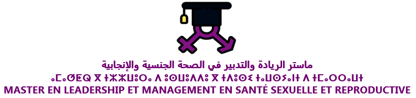

Pr. Amal KORRIDA
Épidémiologie & Génétique Humaine | ISPITS Agadir
Épidémiologie & Génétique Humaine | ISPITS Agadir
| Niveau | Module | Semestre | Support |
|---|---|---|---|
| Licence | Sciences Biologiques (Cellulaire, Histologie, Immunologie) | S1 | |
| Licence | Nutrition Humaine et Diététique Clinique | S1, S2, S3 | |
| Master | Méthodologie de la Recherche Clinique & Action | S2, S3 |

Coordonnatrice pédagogique de la filière Leadership et Management en Santé Sexuelle et Reproductive.